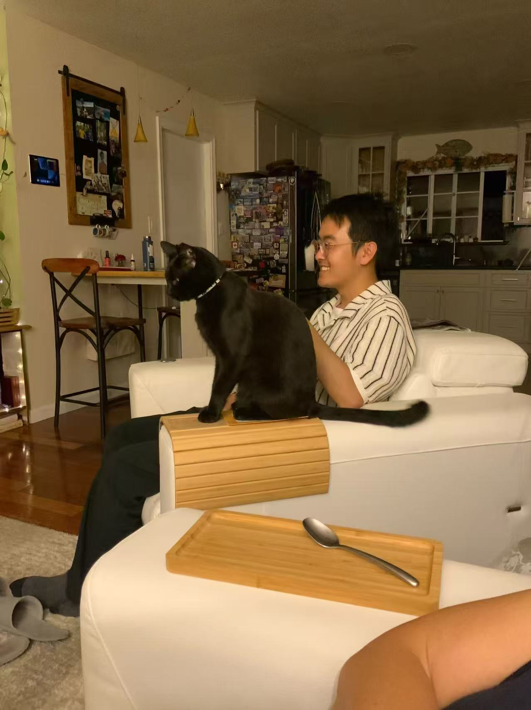

2024 — now
Brown University / Computer Science
Gaining a deeper understanding of computer systems, distributed systems, and infrastructure services including networks and databases.
systemssoftware engineering
About me
I'm a computer science student at Brown University. I'm interested in robust and beautiful software delivery, and studying the design of famous software systems or services to enjoy the art of their design.

Tianrui Zhang / 2025
the path so far
Gaining a deeper understanding of computer systems, distributed systems, and infrastructure services including networks and databases.
Built a foundation in mathematics, algorithms, and electronics while exploring systems, web development, deep learning, LLMs, and cloud computing.
tools of the trade
selected work
ChinaVis 2024 project exploring museum collections with React, Flask, maps, charts, and interactive data views.
Deep learning project for classifying hypertensive retinopathy images with custom training, evaluation, and visualization workflows.
C++ file-system simulation with disk and block mapping, inode management, and socket-based client/server communication.